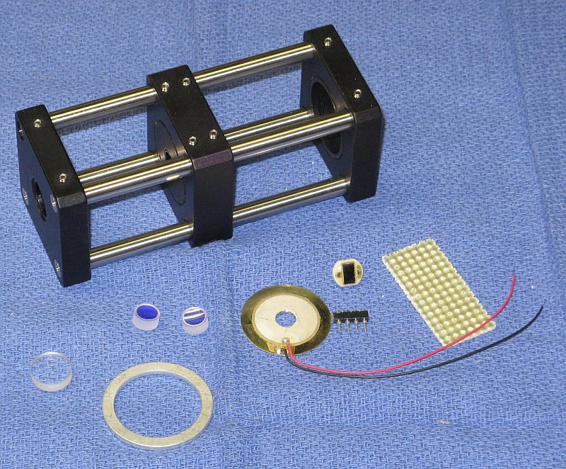
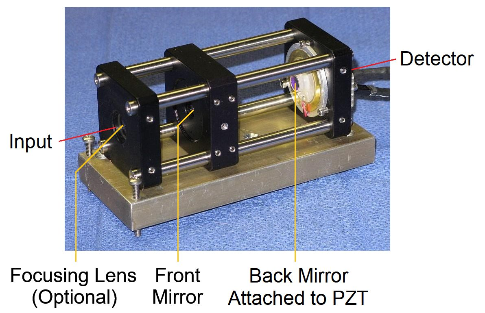

Copyright © 1994-2025
Sam Goldwasser
--- All Rights Reserved ---
Wavelengths beyond 700 nm and slightly below 525 nm may work as well, but NOT down below 500 nm. So no blue, sorry. Performance is best with narrow beam lasers like HeNes but the use of an aperture beam reduction optic should allow the modes of fat beam lasers to be displayed as well. The advantage of a confocal SFPI is that alignment with respect to the laser being tested is much less critical than with a planar-planar SFPI and back-reflections can be off-axis so that the laser is less likely to be destabilized.
The benefit of the deluxe kit is that in addition to what's in the basic kit, it includes parts from Thorlabs (or equivalent) for the major mechanical assembly so that much of the scavanging for scrap sheet metal and other tid-bits is eliminated. The Thorlabs "Cage System" provides a rigid frame allowing for initial adjustment which can then be locked in place. The completed frame and other parts are shown below.
Most of this also applies to other versions of the Deluxe kits like the "Short", "Mid", and "Long" kits with smaller or larger mirror spacings (but not the High Resolution kits which have a separate manual).
The general optical layout for a spherical cavity SFPI is shown below:
For the confocal configuration shown, L = RoC of the mirrors, which must be exactly equal. In this kit, the PZT ring has been replaced by the "holey" beeper element which is more sensistive and a lot less expensive. There is no need for an output focusing lens because the beam is already very narrow. Depending on the characteristics of the laser, an input lens may improve performance.

The standard HENESFPI2 kit includes:
HENESFPI1 parts:
The parameters of the new mirrors are similar to those of the classic Spectra-Physics 470-03 SFPI head.
If in doubt about which version you have, the easiest way to tell them apart is by the color of their reflection of white light: The older mirrors are deep yellow while the new mirrors are silver with a slight bronze tint.
There is generally no reason to prefer the older mirrors except to match a previous version of the SFPI. The finesse at some wavelengths may be slightly higher but that is not usually significant. And with no wedge, mounting of the new mirrors is simplified. ;-)
CAUTION: The mirror coating on the highly curved surface is extremely delicate. DO NOT TOUCH with ANYTHING. The mirrors should be clean, requiring at most to have dust blown off with a air bulb. If cleaning is needed, ONLY use laser mirror cleaning techniques! The warranty does not cover damage to mirror surface! I suggest NOT removing the mirrors from the lens tissue until ready to install. They are just mirrors! You can purchase similar mirrors separately for use as decorative aquarium stones, but those tropical fish had better be really special. :-)
The attachment of the leads to the PZT disk is rather fragile, especially the one soldered to the metallic coated area which is only loosely bonded to the PZT material itself. So it would be a good idea to coat the area with some 5 minute Epoxy to minimize stress, and then to add a strain relief when installed in the SFPI assembly.
The PD can be connected via shielded cable directly to the vertical input of your scope with a 10K ohm load resistor. However, it is better to connect the PD in series with the load resistor and back-bias it with a few volts (e.g., a 9 V battery). With back bias, the response (across the load resistor) will be linear up to several mW. Something along the lines of:
Shielded Cable
R Protect PD1 Center
+-----/\/\-------|<|-----------------------+----o Scope input (direct)
| 1K ohms +--------------+ |
| (Optional) | Shield | /
| | | \ R Load
| | | / 10K ohms
| | | \
| +| | - | | |
+------||||-------------+ +---+----o Scope Gnd
B1 | |
Confirm that the PD is responding to light. Room light will suffice, but a better test source is a dimmable LED flashlight. These use Pulse Width Modulation (PWM) to chop the light output and a pulsed waveform should be clearly visible on the scope.
For initial setup, leave the entire photodiode uncovered. Once there is a signal, installing an aperture to block all but the central 1 mm or so may improve resolution. For low power lasers, a preamp would be beneficial.
HENESFPI2 additional parts:
Note: For SFPI kits with longer RoC mirrors, the rod length will differ and no focusing lens will be included.
Dual polarization option:
For simulataneously monitoring the orthogonally polarized longitudinal modes of a random polarized HeNe or other similar laser, this adds an additional photodiode with sockets for both, a polarizing beam-splitter cube (PBSC), and small custom PCB. The PBSC splits the beam to the two photodiodes. The PDs are wired independently and sent to separate channels of your scope, preferably via twisted pairs. The polarization axes of your laser will then need to be aligned with the SFPI "head". Since there may be some crosstalk due to 100s or 1000s of reflections messing with the polarization, a proper preamp is desirable. This would include cross-channel compensation. Details are provided in: Dual Polarization Detectors for Scanning Fabry-Perot Interferometer.
What you must provide:
The following are NOT included:
If you don't have a drill-press and are not familiar with using small drill bits and taps, it's probably best to consider some alternative. It's really easy to put holes in the wrong place at strange angles and to break drill bits and taps, which ends up making a mess because at the very least, it often impossible to extract the broken pieces. (Don't ask how I know.) Hot-melt glue or 5 minute Epoxy are also satisfactory.
The PZT/rear mirror assembly and Perf. board can be attached to the cage plate with 5 minute Epoxy, which is soft enough that it can be removed and replaced if the need should arise.
Using a narrow file, create a notch wide and deep enough on one surface of the mounting ring for the PZT leads to pass through between the ring and mounting plate.
Use 5 Minute Epoxy to attach the PZT disk to the aluminum spacer ring around its perimeter. The active (coated) side of the PZT disk should be facing up.
The back cavity mirror must be glued to the PZT.
Gently clean the active (top surface) of the PZT disk with alcohol before attaching anything to it.
Carefully remove the mirror from its protective lens tissue. Locate the thinnest part and put a mark on the side with a pencil. The correct angle can usually be obtained by placing a tiny piece of standard Avery™ sticky label under it near its edge on the thin side. :) (Very scientific, huh?) A 1x5 mm piece of label will suffice.
Carefully remove the mirror from its protective lens tissue.
Center the mirror on the PZT disk. While holding it in position with the flat side of a toothpick across the top or (less desirable) a clean cotton swab, apply the tiniest amount 5 minute Epoxy in 3 locations around its perimeter. Just enough to secure it. Once the Epoxy sets up, additional adhesive can be added to increase the strength, but there really isn't much stress on this thing and too much adhesive may restrict the motion of the PZT. Double check that the mirror hasn't shifted position and adjust as needed before the Epoxy sets up.
Set this assembly aside covered so the mirror doesn't collect dust or fingerprints.
Remove one retaining ring (if present) from the CP02T/CP33T cage plate and adjust the other one so it is just flush with the front of the CP02T.
Screw the SM1AD8 adapter in until it is 1 or 2 turns away from the retaining ring.

The focusing mirror is barely visible inside the hole in the cage plate on the left. The front mirror is inside the cage plate in the center. The PZT with back mirror is on the right. In the photo, the edge of the PZT is is glued to an aluminum ring, which is secured with screws to the cable plate on the right. However, just gluing the PZT around the edge to the cage plate is acceptable as long it is carefully centered AND only attached around its perimeter; the center with mirror must be free to move back and forth, if only by a few microns.

More likely, the peaks will be smeared out or composed of multiple small blips as in the sequence of graphics below. Or there may be nothing. Adjust the spacing of the mirrors in small increments Slowly and then let it settle down. With any movement, the display will become quite scrambled, so be patient. If going one way makes it worse, go the other way. :) If the initial cavity spacing was within about 1 mm of being optimal, there should be only one place close by where it resolves into a beautiful display like the one above. ;-)

These simulated "screen shots" depict a display spanning 2 FSRs for an SFPI using short radius mirrors (42 or 38.1 mm) with 99.5%R as the cavity length approaches optimum. From left-to-right, top-to-bottom, the error is approximately: 0.3 mm, 0.15 mm, 0.07 mm, 0.03 mm, 0.015 mm, 0 mm.
The entire sequence represents a cavity length change of <1 percent but will also depend on the finesse and the mode order (confocal, half confocal, etc.). The higher the finesse, the more critical it will be. In other words you mileage may vary. :) The amplitude of the peaks would actually increase by a much larger amount than shown. Which side the "crud" is on depends on the relationship of the ramp voltage to cavity length, swap if backwards. :) Some of these diagrams are originallly from the Toptica SFPI 100 manual, I hope they won't mind. :)
If there is no evidence of any response related to the laser, confirm that the PZT is actually being driven - set the function generator to a few kHz and listen to the PZT! There should be a very audible tone. Check the output of your function generator and connections if there is none. And check that the photodiode responds to light.
Once it's near optimal using the sliding adjustment, tighten the set screws to secure the cage plate. Then fine tune further by rotating the SM1AD8 adapter. A simple tool for this can be made by repurposing a giant GEM™ paper clip bending it so its ends slip into the holes in the SM1AD8. Rotate the SM1AD8 while pressing it *away* from the locking ring so it's outside threads are against the cage plate's inside threads. Keep in mind that since it's likely the mirror isn't perfectly centered, the alignment will also change slightly as the SM1AD8 adapter is rotated, so also peak alignment as you are doing this. Then tighten the locking ring to secure it. This may require 3 or 4 hands.
Another method for making changes in mirror spacing once it's close to optimal is to loosen two of the grub screws on one side securing the cage plate with the SM1AD8, then push it forward or back, and retighten them. There is enough free-play that this will result in a small movement. Peak the alignment and if the appearance improves, then do it again. Or try the opposite direction if it gets worse.
If you have a kit with an adjustable mount (Thorlabs KC1) at the back end, that can be used to do the fine adjustment using its three screws as it can translate a few mm back and forth.
First time users do not appreciate how precise the spacing needs to be. But it's less than 1/10th the width of a human hair - a few microns. Sliding the mount back and forth will probably not work.
It's also essential to avoid back-reflections into the laser, which will likely destabilize it and create chaos in the display. The alignment should be adjusted such that the reflections from the SFPI (mostly the front mirror) do NOT enter the laser's aperture. With the confocal cavity SFPI, a slight offset will not significantly affect resolution. Ideally, an optical isolator could be used but they are quite pricey.
Using mirrors identical to the ones in the kit, a finesse of at least two hundred should be possible over wavelength range, and possibly more, though that would depend on all the stars aligning perfectly. :) With no angular adjustment, the centerlines of the two mirrors should also be as coincident as practical to really peak the finesse. This requires either super-careful installation of the glued mirror, or fine adjustment of the position of the PZT assembly on the cage plate. In addition, down to a point, narrower beam (e.g, 1 mm) generally results in higher finesse. A wide beam can be put through an aperture (though the signal will be reduced.)
While the assembly guidelines above assume the standard confocal cavity configuration, there are other discrete mirror spacings that are also mode-degenerate. Several shorter ones are listed in the table below:

Two that may be of interest are:
The SFPI heads can also be more compact if shorter cage rods are used. While the finesse (the ratio of FSR to resolvable mode Width or FWHM) is lower, it should still be quite satisfactory and similar to that of commercial instruments.
The shorter spacings for N between 2 and 10 can be set up using the Deluxe kit by sliding the middle cage plate on the rods close to the correct location and then fine tuning it as described above. There are also a few longer spacings that might be useful. But note that even though Planar and Spherical look like they should be excellent, achieving decent performance may be extremely challenging. There is much more info in "Sam's Laser FAQ" starting with Mode Degenerate Fabry-Perot Interferometers.
You can safely ignore the above to get started and just consider these as possible options to experiment with once the basic SFPI is functional. Or for your special project course. ;-)